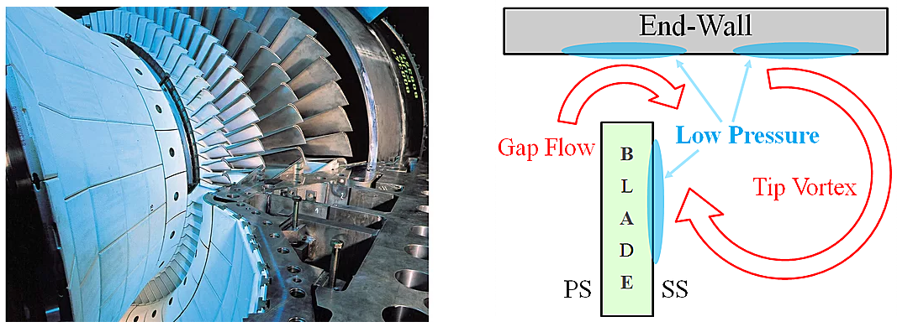
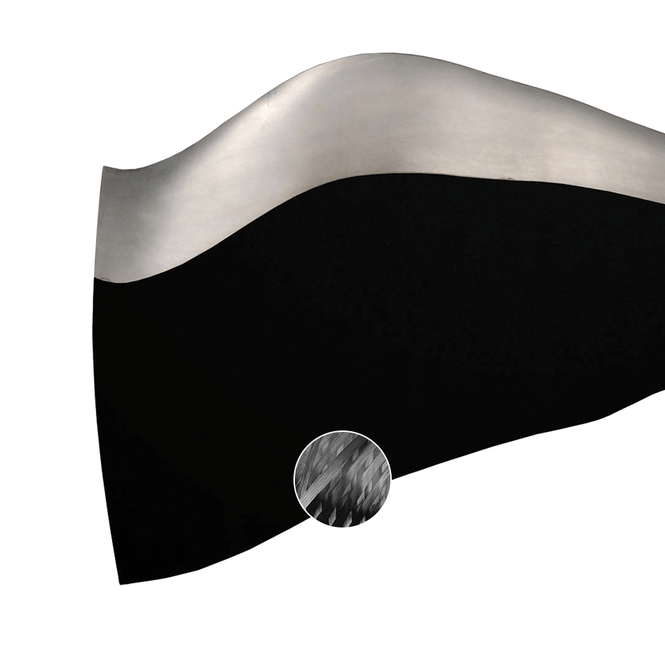
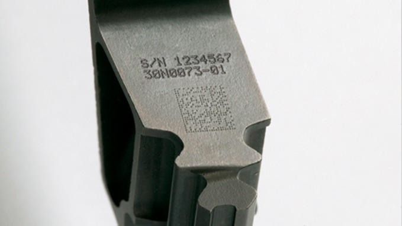
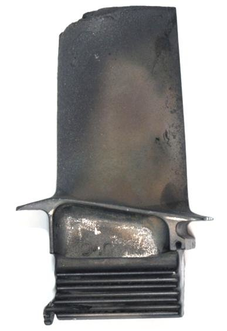

Industry Projects
AI-Powered Physics-based Tip Clearance Prediction Method
Tip clearance is the distance between tip of rotating airfoil and stationary part. Such clearances introduces aerodynamic losses, decreasing gas turbine efficiency and degradation of blade tips.

Fig 1: Tip clearance on turbine blade (left) Schematic of the leakage flow in turbines (right)[1]
During the design stage, the effect of tip clearance is measured by running lot of computer modelling and simulations. To impose design exploration at pace, lot of physics-based reduced order model were introduced. However, it involves lot of manual calibrations and requires substantial knowledge to get it work.
I devised a physics informed neural network to estimate the tip clearance dynamics. By taking into account the underlying physical model, allows to bound the space of admissible solutions to the neural network parameters. This translates the problem to a lower requirement in both the amount of training data and neural network size.
This innovative and creative work has helped to achieve the following
- Improved the solution quality of physics reduced order models.
- Accurate and systematic way to estimate tip clearance dynamics.
- Reduced the calibration time of physics reduced order model from 2 weeks to 2 hours.
Automated Defect Recognition in Fan Blade X-ray Images
Manufacturing of aeroengine fan blade involves lot of process. As one of the inspection process, the blades are X-rayed to identify defects. The inspections are manual and require several levels of scrutiny. One of the risk in manual process is that it can lead to potentially different standards of X-ray image analysis and sentencing being accepted.

Fig 2: Internal structure of aeroengine fan blade.[2]
I developed an Automated Defect Recognition (ADR) system equivalent to human information processing stage. I researched and formulated the defect identification problem as anomaly detection using GAN to address the following challenges in the current process (1) a smaller number of examples for each defect class, (2) disorganized defect logging process, and (3) prone to new defects. It builds upon by learning the normalcy of the images from the good images, reuse them to identify and locate the defects in a new X-ray image. In this way, we can quantify goodness and use that to identify any defect.
This piece of work has helped to save 10% cost of the overall inspection process. Also, demonstrated the capability that it can be read across to other visual inspection process where we are short of historical data for each defect class.
Automated Character Recognition in Turbine Blade Images
Jet engines are made up of almost 25,000 parts. Most of the parts are stamped with serial numbers to avoid mistakes in the production line and supply chain. In turbine blade corrosion level inspection process, the serial numbers are recorded to keep track of it. Each blade has a serial number and also it is engraved in the form of 2D data matrix.

Fig 3: Turbine blade with 2D data matrix code and serial number.[4]
The challenge here is that the blades after serving the engine, has lot of scratches and dirt on the surface which makes difficult to decode. I developed an OCR system to read the serial number from the given turbine blade images. It involves image collection, building dataset, image annotation, image augmentation, training the network and algorithm evaluation.
Character recognition or in general object detection has been an area of intensive research accelerated with deep learning. Character recognition can be achieved through two approaches.
- Region-Based detectors
- Single Shot detectors
I have implemented and evaluated the algorithms related to above mentioned approaches such as R-CNN, Fast R-CNN, Faster R-CNN, Yolo and SSD. The algorithm which worked well for this use case is SSD with an accuracy of 75%. Later, I improved the accuracy of the OCR system to 90% by using the computer vision algorithms and commercially of the system tools.
It has been succefully deployed in the factory which in turn improved the productivity from 1 batch to 8 batches per day. In addition, the setup of the OCR system has helped the inspection unit to made available information digitally with just 1 click of a button.
Automated Corrosion Level Detection in Turbine Blade Images
Mechanical erosion like pitting, cracking, and burning is the main form of damage to engine compressor and turbine sections, with corrosion usually reserved for the parts of the airplane in closest contact to the atmosphere. But there is one form of corrosion that exists in the blistering environment of a turbine engine hot section,and it is called sulfidation.

Fig 4: Deterioration of turbine blades caused by sulfidation.[4]
It falls to the service technician and inspector to collect and analyze the blade and physical evidence to determine the true condition and effect of protective coatings. Human inspectors manually rank the corrosion condition into different levels which is subjective due to un-controlled lighting and human error.
I developed sophisticated prediction models which can learn the relationships between the given image and the corrosion level by just using the pixel information. I evaluated several traditional machine learning algorithms. As a result, random forest yielded 91% accuracy.
This work has drastically reduced the process duration from 1 week to 1 day per batch. More importantly, the system has completely avoided the human errors by exhibiting a consistent and accurate results.
Automated Vortex Detection in Unsteady CFD Simulations
The formation of vortices in the surrounding fluid is used as one of the indicators for measuring the efficiency of aerodynamic system designs. Automated vortex detection methods are needed to facilitate the exploration of large scale turbulent fluid flow simulations. The local methods often use the notion of swirling fluid motion to identify the vortex and it is successful to some extent. However, this kind of methods requires informations such as location, orientation, direction, etc. As a consequence, it increases the computational time.

Fig 5: Vortex shedding behind a circular cylinder.[5]
I formulated the vortex detection problem as a binary classification task. The underlying idea is to identify the vortex for any given CFD mesh point by just using the raw simulation properties. In this piece of work, I focused on four areas namely feature selection, feature extraction, handling imbalance data and algorithm selection. I came up with a vortex prediction model using recurrent neural network (RNN). As a result, it could able to predict vortices with 95% accuracy. More details can be found in [6].
This work has reduced the vortex detection process from 1 hour to 1 minute per snapshot. Also, demonstrated the capability that it can act as an enabling tool to enhance the understanding of flow feature patterns and also in facilitating the analysis of large CFD data.
References
[1]
https://www.snugt.net/clearance-flow
[2]
https://www.cleanpng.com/png-cfm-international-leap-boeing-737-max-aircraft-tur-5946458/
[3] https://www.technifor.in/markets-and-materials/markets/aerospace-defence/marking-turbine-blades
[4]
https://www.researchgate.net/figure/Examples-for-deterioration-of-turbine-blades-caused-by-excessive-temperature-of-the_fig1_279210009
[5]
https://giphy.com/gifs/street-von-karman-adfcF43L8QgZW
[6]
Rajendran, Vinod, et al. "Vortex Detection on Unsteady CFD Simulations Using Recurrent Neural Networks." 2018 Fluid Dynamics Conference. 2018.